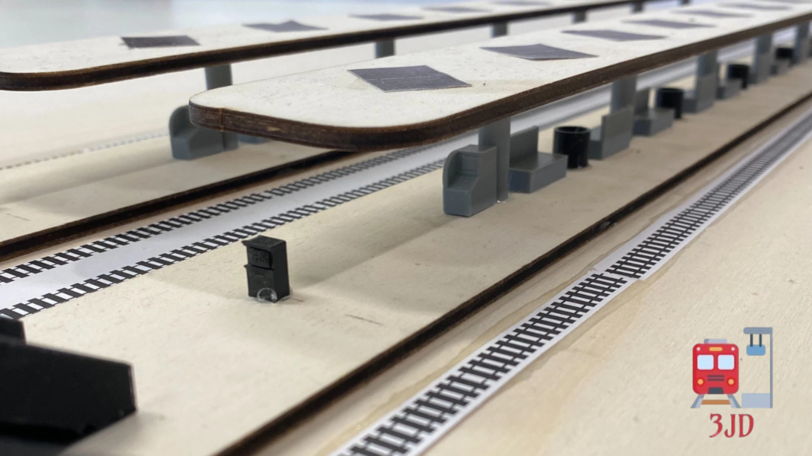
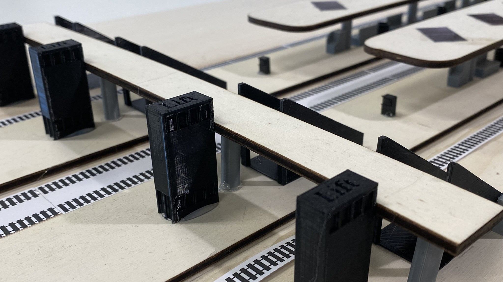
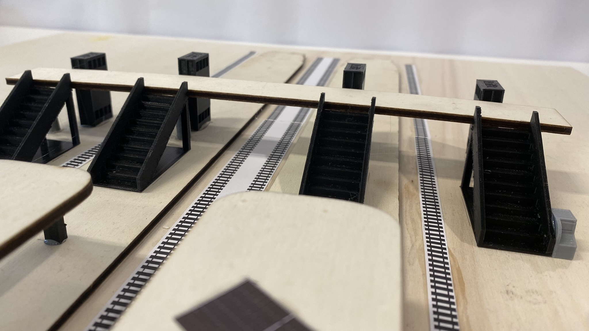

Wat was dit project?
Dit project ging over het ontwerpen van een station dat past bij de omgeving en voldoet aan de wensen van de opdrachtgever. Het was een mooie combinatie van creatief denken en praktisch ontwerp.
O&O · ProRail
Voor RijswijkBuiten en ProRail heb ik een stationontwerp gemaakt dat zowel praktisch als duurzaam moest zijn. Het project combineerde ontwerpen, onderzoek en creatieve oplossingen voor een echte opdracht.

Dit project ging over het ontwerpen van een station dat past bij de omgeving en voldoet aan de wensen van de opdrachtgever. Het was een mooie combinatie van creatief denken en praktisch ontwerp.
Ik heb me gericht op het uitwerken van het ontwerp en het zichtbaar maken van de belangrijkste keuzes in het project. Het resultaat was een goed onderbouwd concept dat zowel functioneel als esthetisch sterk was.

